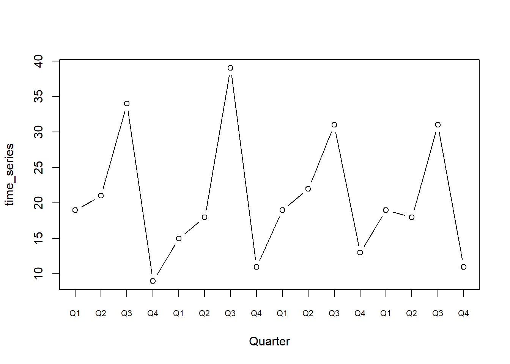

Topic 6 Illustrative example
We will now display a simple procedure to seasonally adjust a time series.
Consider the following time series (which we will denote as time_series), collecting observations over four years, measured with a quarter-year frequency. If we plot it we can see that it displays a clear recurring pattern.
time_series <- c(19,21,34,9,15,18,39,11,19,22,31,13,19,18,31,11)
T_ts <- length(time_series)
plot(time_series, type="b", xaxt="n", xlab = "Quarter")
axis(1, at = 1:T_ts, labels=rep(paste0("Q", 1:4), T_ts/4), cex.axis=0.7)
As a first step, we collect the data into a table. As already highlighted by the plot, we can note that, in every year, the highest observation is the one corresponding to the third quarter, and the lowest corresponds to the fourth quarter.
tble <- time_series
dim(tble)=c(4,4)
tble <- t(tble)
rownames(tble) <- 1990:1993
colnames(tble) <- paste0("Q", 1:4)
tble## Q1 Q2 Q3 Q4
## 1990 19 21 34 9
## 1991 15 18 39 11
## 1992 19 22 31 13
## 1993 19 18 31 11We can then compute the average value of the series for every year:
average=rowMeans(tble)
tble_1=cbind(tble, average)
tble_1## Q1 Q2 Q3 Q4 average
## 1990 19 21 34 9 20.75
## 1991 15 18 39 11 20.75
## 1992 19 22 31 13 21.25
## 1993 19 18 31 11 19.75We then divide each value by the average of its corresponding year. In doing so, we obtain a table collecting all the percentage deviations from each year’s average.
tble_2 <- tble_1[,1:4]/average
tble_2## Q1 Q2 Q3 Q4
## 1990 0.9156627 1.0120482 1.638554 0.4337349
## 1991 0.7228916 0.8674699 1.879518 0.5301205
## 1992 0.8941176 1.0352941 1.458824 0.6117647
## 1993 0.9620253 0.9113924 1.569620 0.5569620We now average over each quarter to get what are called “Seasonal Indices”. These express, for each quarter, how much the corresponding observations tend to deviate from the average. They are therefore a measure of the seasonal effect present in the series.
SIndex <- colMeans(tble_2)
tble_3 <- rbind(tble_2, SIndex)
tble_3## Q1 Q2 Q3 Q4
## 1990 0.9156627 1.0120482 1.638554 0.4337349
## 1991 0.7228916 0.8674699 1.879518 0.5301205
## 1992 0.8941176 1.0352941 1.458824 0.6117647
## 1993 0.9620253 0.9113924 1.569620 0.5569620
## SIndex 0.8736743 0.9565511 1.636629 0.5331455Interestingly, the sum of the indices is always equal to the number of “seasons” (in our case of quarters) present.
sum(SIndex)## [1] 4Finally, to deseasonalize the original series (that is to remove the “seasonal effect” as summarized by the seasonal indices), we divide each observation by the corresponding seasonal indicex according to the formula:
\[ \text{Deseasonalized} = \frac{\text{Observed}}{\text{Seasonal Index}} \]
tble_4 <- tble/SIndex[col(tble)]
tble_4## Q1 Q2 Q3 Q4
## 1990 21.74723 21.95387 20.77441 16.88094
## 1991 17.16887 18.81760 23.82947 20.63226
## 1992 21.74723 22.99929 18.94137 24.38359
## 1993 21.74723 18.81760 18.94137 20.63226We can finally plot the resulting series:
result=as.vector(t(tble_4))
plot(result, type="b", ylim=c(10,40), xlab="Quarter", ylab="Deseasonalized time_series", xaxt = "n")
axis(1, at = 1:T_ts, labels=rep(paste0("Q", 1:4), T_ts/4), cex.axis=0.7)
We can appreciate how the resulting time series is way smoother than the original and, more importantly, no longer exhibits a clear seasonal pattern.
The actual algorithms and models employed to perform seasonal adjustment are more sophisticated, but the previous example can still gives good insight of what seasonal adjustment is about.